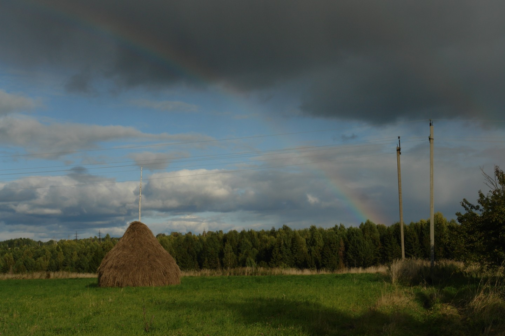

История
Очерк заселения, административная принадлежность, занятия жителей, храм и школа.
Место для архивных сведений, воспоминаний, списков жителей и фотографий.
Этот сайт посвящен деревне Глушиха в Шарьинском районе Костромской области (у речки Дороватой).
По «Спискам населённых мест Российской империи» в 1872 году деревня относилась ко 2-му стану Ветлужского уезда Костромской губернии: 13 дворов, 48 мужчин и 62 женщины. Перепись 1897 года даёт уже 154 жителя. К 1907 году — 32 крестьянских двора и 270 человек, кузница; основное занятие — лесной промысел. Старое написание — Глущиха.
Сюда удобно вставить цитату из метрической книги, ревизской сказки или воспоминаний старожила.

Готовая сетка страниц под исторические материалы. Каждый блок — отдельная страница с полями-заглушками.
В России есть несколько деревень с этим именем (Костромская и Кировская области, Пермский край).